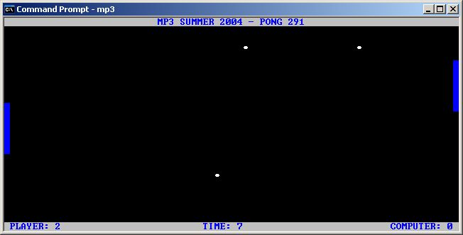

<%
title = "ECE 291 - MP3"
subtitle = "MP3"
%>
Machine Problem 3: Pong 291
| Assigned |
Thursday, July 1, 2004 |
| Due Date |
Friday, July 9, 2004 |
| Purpose |
Asynchronous I/O, Interrupts, Text Mode
Video |
| Points |
85 |
Introduction
In this MP, you'll be writing the video game that started it all -
good ol' Pong. You'll be processing hardware interrupts to perform
asynchronous I/O, drawing in text mode video, and even doing a little artificial
intelligence to move the computer player's paddle.

Problem Description
Program Variables
The MPFlags variable contains the status flags that are
used in the MP. It is a waste of space to create separate variables for
each of the status flags; the values of the flags will always be either 0 or 1,
so we can use a bit to represent the flag instead of a byte. The following
bullets describe how each bit in MPFlags is used.
- Bit 0 - Direction to move the user's paddle (0=up, 1=down)
- Bit 1 - Indicates the user wants to move his or her paddle (set when the
user presses the UP or DOWN arrow key)
- Bit 2 - Exit Game (set when the user presses the ESC key)
In using these flags, you should familiarize yourself with the logical instructions so that you're
able to set, clear, or toggle one or more bits of a byte.
We need to keep multiple pieces of info for each of the NUMBALLS balls in the
game, namely position on the screen, direction of travel, and visibility.
To make things easier for you, a Ball structure has been defined as
follows:
STRUC Ball
.X resb 1
.Y resb 1
.Flags resb 1
ENDSTRUC
Where Ball.X holds the X coordinate, Ball.Y holds the Y coordinate, and
Ball.Flags is a flags variable which holds direction and visibility information
as follows:
- Bit 0 - Visibility flag (0=not visible, 1=visible)
- Bit 1 - Horizontal direction flag (0=left, 1=right)
- Bit 2 - Vertical direction flag (0=up, 1=down)
This structure definition creates the following constants:
Ball.X EQU 0
Ball.Y EQU 1
Ball.Flags EQU 2
Ball_size EQU 3
The constants correspond to offsets of where the information will be
stored. So, the first thing stored in the Ball structure will be the X
coordinate, so Ball.X is offset 0 from the beginning of the structure.
Since we're reserving a byte for the X coordindate, Ball.Y, the next value to be
stored, will be at offset 1. Ball.Flags is at offset 2 for similar
reasons. Ball_size is also defined as the number of bytes taken up by the
structure, so in our case, Ball_size = 3. If we used words to hold the X
and Y coordinates, for instance, the constants would change as follows:
Ball.X EQU 0
Ball.Y EQU 2
Ball.Flags EQU 4
Ball_size EQU 5
For some reason, though, NASM doesn't like the use of structures with 16-bit
programs, so I had to define the constants as well as the structure for
you. In 32-bit programs, you only have to declare the structure, and NASM
will take care of defining the constants.
In order to actually reserve space in memory for the balls, we use a
declaration such as:
Balls times NUMBALLS*Ball_size db 0
We need to reserve a Ball structure for each ball we want in the game, so the
expression NUMBALLS*Ball_size corresponds to the number of bytes required to
hold NUMBALLS Ball structures. The declaration above creates Balls
as an array of Ball structures.
In order to use the structure to read/write parts of the Balls array,
you could use instructions such as:
mov al, [Balls+Ball.X]
; Reads the X coordinate of the first ball and stores it to al
mov [bx+Ball.Y], ah ;
Writes ah to the Y coordinate of the Balls array element pointed to by bx
As you can see, the use of structures makes your code much more readable, as
it is easier to equate Ball.Y with the offset of the Y coordinate than it is to
equate 1 with the offset.
Text Mode Video
Section 11.1 of the lab manual discusses text mode video. In this MP,
you'll be writing directly to page 0 of video memory, which we'll keep at the
standard size of 25 rows and 80 columns. The lab manual has examples on
how to do this. Recall that page 0 of
video memory begins at segment:offset B800:0000h. Also, the colors you'll be working with in the MP are defined
for you as constants.
Double buffering is a technique used to eliminate screen flicker. If you've ever
played any old-school Nintendo games, you most likely seen the screen flicker
occasionally. With double buffering, you create a buffer equal to the size
of the video memory screen buffer (we'll call this buffer ScreenBuffer), draw the next frame to the temporary buffer,
then copy the entire temporary buffer to video memory when you're ready to
update the screen. This process allows for smooth transitions between
frames, which solves the flicker problem.
Asynchronous Keyboard I/O
In previous MPs, we used the library's kbdin/kbdine functions to get
keyboard input. These functions continuously polled the keyboard until they received
input. In many cases, we want our programs to accept input from other devices
and/or execute other functions while waiting for user input. This is done by
writing our own interrupt service routines (ISRs). For this MP, we will be
obtaining user input from the keyboard asynchronously. We'll also be using the system timer to calculate
when the balls and the paddles are able to move and to keep track of the running
time of the program.
System Timer
We'll be using the system timer interrupt in this MP to keep track of when
the balls and paddles are allowed to move. We'll also keep track of the
running time of the program in seconds. The default setup of the system
timer causes it to trigger an interrupt 18.2 times per second. Thus, well
increment a variable which is keeping track of the number of timer ticks, or
number of times the interrupt is called. Then, when this variable reaches
18, we'll reset it back to 0 and increment the number of seconds.
String Instructions
For certain parts of the MP, you can use the string instructions to improve
the performance of your code. Like instructions that we've discussed
already, the string instructions combine the functionality of multiple
instructions into a single instruction. The string instructions are used
to do the following:
- Move a string from one location to another (MOVSB, MOVSW, MOVSD)
- Store a single piece of data to a string (STOSB, STOSW, STOSD)
- Compare strings (CMPSB, CMPSW, CMPSD)
- Scan a string for a specific value (SCASB, SCASW, SCASD)
For specific details and usage of these instructions, refer to
Appendix B.4 of the lab manual. With
each of the above instructions, you can also use the REP instruction with the CX
register, which repeats the execution of the instruction CX times.
MP3 Program Assignment
You will replace these
procedures from the LIBMP3 library by commenting out the statements calling the
library procedure and adding your code. Each procedure that you write should
match the output of the library code exactly. Each of the function calls and
their functionality is described below in the Subroutines section. The
best way to get a feel for the program is to run it to see how it is supposed
to operate. You can also edit the test file to see how various changes will
affect the program execution. The program can be run by typing mp3
at the command prompt.
Subroutines
This assignment has 15 subroutines. You will receive credit by replacing each
of these 15 subroutines listed below with your own code.
MP3Main
- Installs/Removes ISRs and runs main game loop
- Inputs: None
- Outputs: None
- Calls: InstallKeyboard, InstallTimer, CheckGameEnd, DrawBackground,
MovePlayer, MoveComputer, DrawPaddles, MoveBalls, DrawBalls, DrawStats,
RefreshScreen, RemoveKeyboard, RemoveTimer
- Main game loop pseudocode:
Install ISRs
while the program should not exit
call DrawBackground
if ( MovePaddleTime = 3 )
MovePaddleTime = 0
If the user wants to move his
or her paddle, call MovePlayer
call MoveComputer
end if
call DrawPaddles
if ( MoveBallTime = 2 )
MoveBallTime = 0
call MoveBalls
end if
call DrawBalls
call DrawStats
call RefreshScreen
end while
Remove ISRs
- Points: 10
MoveBalls
- Updates the position and visibility of each ball
- Inputs: Balls, PlayerScore, ComputerScore, CoordTable,
NUMBALLS
- Outputs: Balls, PlayerScore, ComputerScore
- Calls: CheckCollision
- MoveBalls pseudocode:
for each visible ball
if the ball reaches the rightmost column
increment PlayerScore and
set the ball's visibility flag to 0
else if the ball reaches the leftmost column
increment ComputerScore and
set the ball's visibility flag to 0
else if there is no collision between the ball and the
game board
Update the ball's X and Y
position based on its direction of travel
(Use the Ball.Flags and CoordTable
to perform this step)
end if
end for
- Points: 13
MovePlayer
-
Moves the player's paddle
-
Inputs: MPFlags, PlayerPaddle
-
Outputs: MPFlags, PlayerPaddle
-
Calls: None
-
Notes:
- Increment the value of PlayerPaddle if the user
wants to move down; make sure that the user cannot move
the paddle past the bottom border
- Decrement the value of PlayerPaddle if the user
wants to move up; make sure that the user cannot move the
paddle past the top border
- Points: 6
MoveComputer
-
Moves the computer's paddle
-
Inputs: ComputerPaddle
-
Outputs: ComputerPaddle
-
Calls: None
-
Notes:
- You should come up with your own algorithm to move the
computer paddle. For example, the library code
determines which ball is closest to the computer's paddle
and follows that ball so it can block it. Feel free to
use or improve upon this algorithm, or come up with
something different. Your algorithm doesn't have to be
perfect, but it should make a noticeable attempt to defend
against the balls.
- To keep things fair, only increment or decrement ComputerPaddle
each time the function is called
- Make sure that the computer paddle doesn't move past the
top or bottom borders
- Points: 8
DrawBackground
-
Draws the background to the screen buffer
-
Inputs: Background
-
Outputs: ScreenBuffer
-
Calls: None
-
Notes:
- Copy each word in the Background to the ScreenBuffer
- Use string instructions for better performance
- Points: 4
DrawPaddles
-
Draws the player and computer's paddle to the screen buffer
-
Inputs: PlayerPaddle, ComputerPaddle, PADDLELENGTH
-
Outputs: ScreenBuffer contains the paddles
-
Calls: None
-
Notes:
- PlayerPaddle and ComputerPaddle contain
the row in which each paddle should begin on the screen
- Each paddle should have a vertical length of
PADDLELENGTH
- Points: 6
DrawBalls
-
Draws the balls to the screen
-
Inputs: Balls, NUMBALLS, BALL
-
Outputs: ScreenBuffer contains the balls
-
Calls: None
-
Notes:
- For each visible ball, calculate its byte offset in the
screen buffer and write the BALL constant to that location
- Points: 6
DrawStats
-
Draws the player's score, computer's score, and elapsed time
in seconds to the screen
-
Inputs: PlayerScore, ComputerScore, NumSeconds
-
Outputs: ScreenBuffer contains the stats
-
Calls: binasc
-
Notes:
- The player's score should be written to (row,col) =
(24,8)
- The computer's score should be written to (row,col) =
(24,78)
- Don't forget to convert each numeric score to its ASCII
equivalent before writing it to the buffer; each is only a
single digit, so you can just add a value to each to
convert it to ASCII instead of calling binasc
- Use binasc to convert NumSeconds to an ASCII
string and loop over the string to copy it to the buffer
- Use 79h as the attribute byte when writing the scores
and number of seconds
- Points: 8
RefreshScreen
-
Updates the screen by coping the screen buffer to video
memory
-
Inputs: ScreenBuffer
-
Outputs: Video memory updated with contents of
ScreenBuffer
-
Calls: None
-
Notes:
- The segment:offset of page 0 of text mode video memory
is B800:0000h
- Use string instructions for better performance
- Points: 4
InstallKeyboard
-
Installs the keyboard ISR
-
Inputs: None
-
Outputs: OldKeyboardV
-
Calls: None
-
Notes:
- The keyboard uses interrupt number 9
- Read the current value of the ISR out of the interrupt
vector table and store to OldKeyboardV before updating the table with your keyboard
ISR
- You should read/ write the interrupt vector table
directly as done in class
- Points: 2
RemoveKeyboard
-
Removes the keyboard ISR
-
Inputs: OldKeyboardV
-
Outputs: None
-
Calls: None
-
Notes:
- The keyboard uses interrupt number 9
- Write the original value back to the interrupt vector
table
- You should write the interrupt vector table directly as
done in class
- Points: 2
KeyboardISR
-
Processes keyboard interrupts
-
Inputs: scancode waiting at port 60h
-
Outputs: MPFlags
-
Calls: None
-
Notes:
- Remember to set DS=CS
- The scancodes for the keys you'll be using in the MP are
defined as constants for you
- When the user presses the ESC key, set the "End Game"
flag
- When the user presses the UP key, set MPFlags to move the
user's paddle up
- When the user presses the DOWN key, set MPFlags
to move
the user's paddle down
- When the user releases the UP or DOWN keys, reset the
"Player wants to move the paddle" flag
- Keyboard scancode releases differ from presses in that
their most significant bits are set; thus the scancode for
a UP key press is 48h, and the scancode for an UP key
release is C8h (48h+80h)
- Remember to send the end-of-interrupt signal to the PIC
(write the value 20h to port 20h) every time the ISR
is called
- Points: 6
InstallTimer
-
Installs the timer ISR
-
Inputs: None
-
Outputs: OldTimerV
-
Calls: None
-
Notes:
- The timer uses interrupt number 8
- Read the current value of the ISR out of the interrupt
vector table and store to OldTimerV before updating the table with your timer
ISR
- You should read/write the interrupt vector table
directly as done in class
- Points: 2
RemoveTimer
-
Removes the timer ISR
-
Inputs: OldTimerV
-
Outputs: None
-
Calls: None
-
Notes:
- The timer uses interrupt number 8
- Write the original value back to the interrupt vector
table
- You should write the interrupt vector table directly as
done in class
- Points: 2
TimerISR
-
Processes system timer interrupts
-
Inputs: MoveBallTime, MovePaddleTime, TimerTicks,
NumSeconds
-
Outputs: MoveBallTime, MovePaddleTime, TimerTicks,
NumSeconds
-
Calls: [OldTimerV]
-
Notes:
- Remember to set DS=CS
- Increment MoveBallTime, MovePaddleTime, and
TimerTicks
- If TimerTicks = 18, reset it to 0 and increment NumSeconds
- Make sure you chain the original handler inside your
custom TimerISR
- Points: 6
Given Code
Random
-
Generates a random number
-
Inputs: RandomSeed, CX = exclusive upper bound on
random number (e.g. CX = 10, number returned is in range
0...9)
-
Outputs: RandomSeed, AX = random number in range
0...CX-1
-
Calls: None
CheckEndGame
-
Checks the end of game conditions: user presses ESC key to
exit, or no more balls are visible
-
Inputs: MPFlags, Balls
-
Outputs: AL = 1 if the program should exit, 0 otherwise
-
Calls: None
CheckCollision
-
Checks for collisions between a ball and a barrier in the
game board AND updates the ball direction flags if
there is a collision
-
Inputs: BX = pointer to Ball structure, i.e., one of
the elements of the Balls array
-
Outputs: If there is a collision, the Ball
structure's direction flags are updated and AL = 1;
otherwise, the Ball structure remains the same and AL
= 0
-
Calls: None
Development Log and Cover Memo
As you work on the MP, you will keep a simple MP development log. The log
will document your design decisions, development plan, and debugging
experiences, including the time you spent on different parts of the machine
problem. The log may be kept in any form. In general, whenever you work on a
machine problem, briefly record the starting time, significant design decisions,
progress in coding and testing, bugs you discovered, and the ending time. Do not
record simple syntax errors detected by NASM at assembly time; these are not
considered to be bugs.
Then, you will submit a cover memo of 200 to 400 words (up to one page,
single spaced). The cover memo should answer the following questions, based on
the information that you record in your MP development log.
- How much time did you spend on the design, coding, and testing of each
part or subroutine?
- What kinds of defects (bugs) did you find during the development of the
program? When did you discover these defects (during code review or during
testing)? How did you find them?
- What you would do differently for the next MP?
Type your cover memo into a plain text file in your MP3 directory.
Hints
-
The LIBMP3 file contains executable library functions for each of the routines
that you need to implement. This allows you to run the program and understand
how it works before you implement it. You can test your program with any
combinations of your own code and library functions. You will only receive
credit, however, for the routines that you implement yourself.
-
When debugging your code in TD, you will find it helpful to use the memory
window to show you the memory location of the file and strings. You can also
use the watch window to keep track of variables in your code.
-
Do not assume that the file starts at memory location 0.
-
You may define new variables as needed.
-
Be very careful if you call another procedure not to destroy registers that the
calling procedure uses.
-
START EARLY!
-
You need to preserve register values in all of the procedures
you write. To do this, push all the registers you use in the procedure at
the beginning of the procedure. Then, pop them all in reverse order at
the end of the procedure (right before you return).
-
You need to create function headers for each of the functions you write.
Function headers should include the name of the function, the list of inputs to
the function, the list of the outputs, and any functions that the function
calls. You will lose points if you do not do this.
-
Monitor the webboard for
clarifications and help.
Procedure
-
You will begin this MP with the following files:
-
MP3.ASM: Program Framework
-
Makefile: Specifies how and when programs are assembled and
linked.
-
LIBMP3.LIB: Library functions for MP3
-
LIB291.LIB: General-purpose library functions
-
You may copy these files from the network drive to your home directory with the
following command:
xcopy /s V:\ece291\mp3 W:\mp3
or download the files from this server as mp3.zip
-
Add your code to MP3.ASM.
-
Assemble and link your program by typing make. This command
reads the Makefile then invokes NASM and TLINK to build an executable program.
-
Use TD debugger to find and correct program errors.
Final Steps
-
Demonstrate your MP3.EXE to a TA or to the instructor. The TA or
instructor will verify that your program produces the correct output.
-
Be prepared to answer questions about any aspect of the operation of your
program. The TAs will not accept an MP if you cannot fully explain the
operation of your code and details of your implementation. Delayed MPs will be
subject to late penalties as described in the course syllabus (10%/day).
-
The TA will handin your MP online.
mp3.asm (program framework)